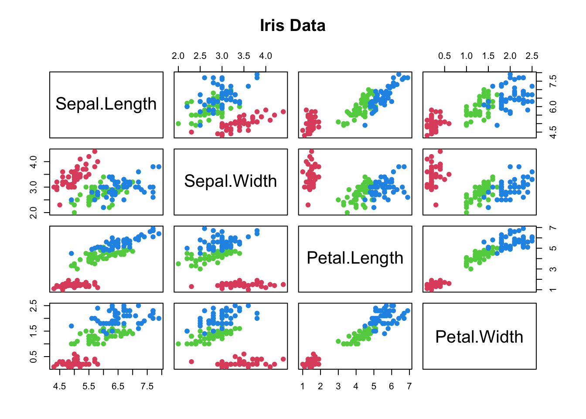
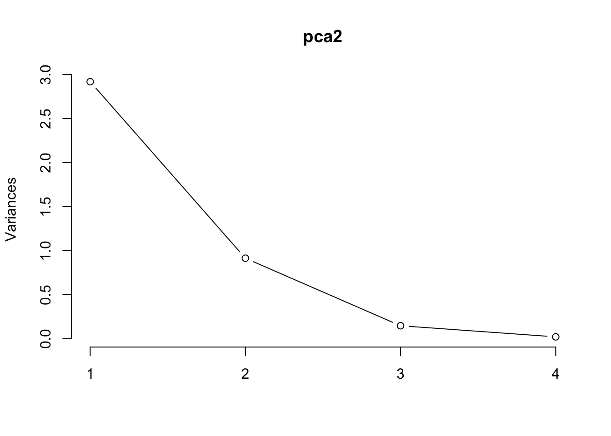

8 Ordination
While cluster analysis let’s us visualize multivariate data by grouping objects into dscrete categories, ordination uses continuous axes to help us accomplish the same task. While physicists grumble if space exceeds four dimensions, biologists typically grapple with dozens of dimensions (species and/or samples). In effect, we “order” this multivariate data in order to produce a low dimensional picture (i.e., a graph in 1-3 dimensions). Just like cluster analysis, we wil use similarity metrics to accomplish this. Also like cluster anlaysis, simple ordination is not a statistical test: it is a method of visualizing data.
Figure 8.1: Synthetic axis rotation in ordination
Figure 8.2: Data reduction ordination
8.1 Ordination as data reduction
Essentially, we find axes in the data that explain a lot of variation, and rotate so we can use that axis as one of our dimensions of visual representation 8.1. Another way to think about it, is that we are going to summarize the raw data, which has many variables (p) byt a smaller set of derived (or synthetic or composite) variables, k 8.2. If the ordination is informative, it reduces a large number of original correlated variables to a small number of new uncorrelated variables. But it really is a bit of a balancing act between clarity of representation (and ease of understanding), and oversimiplication. We will lose information in this data reduction, and if that information is important, then we can make the multivariate data harder to understand! Also note that if the original variables are not correlated, then we won’t gain anything with ordinaton.
8.2 Methods of Ordination
There are lots of different ways to perform an ordination, but most methods are based on extracting the eigenvalues of a similarity matrix. The four most commonly used methods are: Principle Component Analysis (PCA), which is the main eigenvector-based method, Correspondence Analysis (CA) which is used used on frequency data, Principle Coordinate Analysis (PCoA) which works on dissimilarity matrices, and Non Metric Multidimensional Scaling (NMDS) which is NOT an eigenvector method, instead it represents objects along a predetermined number of axes.
| Method | Distance | Variables |
|---|---|---|
| Principal component analysis (PCA) | Euclidean | Quantitative data |
| Correspondence analysis (CA) | X^2 | Non-negative, quantitiative or binary data; species frequencies or presence/absence data |
| Principal coordinate analysis (PCoA), metric (multidimensional) scaling, classical scaling | Any | Quantitative, semiquantitative, qualitative, or mixed |
| Nonmetric multidimensional scaling (nMDS) | Any | Quantitative, semiquantitative, qualitative, or mixed |
Legendre & Legendre (2012) provide a nice summary of when you should use each method 8.1
8.3 Principal Components Analysis (PCA)
Principal Components Analusis is probably the most widely-used and well-known of the “standard” multivariate methods. It was invented by Pearson (1901) and Hotelling (1933), and first applied in ecology by Goodall (1954) under the name “factor analysis” (NB “principal factor analysis” is a synonym of PCA). Like most ordination methods, PCA takes a data matrix of n objects by p variables, which may be correlated, and summarizes it by uncorrelated axes (principal components or principal axes) that are linear combinations of the original p variables. The first k components display as much as possible of the variation among objects. PCA uses Euclidean distance calculated from the p variables as the measure of dissimilarity among the n objects, and derives the best possible k dimensional (k < p) representation of the Euclidean distances among objects.
Figure 8.3: Selecting the synthetic axes in ordination
We can think about this spatially. Objects are represented as a cloud of n points in a multidimensional space with an axis for each of the p variables. So the centroid of the points is defined by the mean of each variable, and the variance of each variable is the average squared deviation of its n values around the mean of that variable (i.e., \(V_i= \frac{1}{n-1}\sum_{m=1}^{n}{(X_{im}-\bar{X_i)}^2}\)). The degree to which the variables are linearly correlated is given by their covariances \(C_{ij}=\frac{1}{n-1}\sum_{m=1}^n{(X_{im}-\bar{X_i})(X_{jm}-\bar{X_j})}\). The objective of PCA is to rigidly rotate the axes of the p-dimenional space to new positions (principal axes) that have the following properties: they are ordered such that principal axis 1 has the highest variance, axis 2 has the next highest variance etc, and the covariance among each pair of principal axes is zero (the principal axes are uncorrelated) 8.3
\(1^{st}\) Principle component

PC axes are a rigid rotation of the original variables.
Dimentionality reduction is the same as first rotating the data with the eigenvalues to be aligned with the principle components, then using only the components with the greatest eigenvalues.
Let’s try an example. We’re going to use a sample dataset in R and the base R version of PCA to start exploring this data analysis technique. Get the iris dataset into memory by typing “data(“iris”). Take a look at this dataset using the head, str or summary functions. For a multivariate data set, you would like to take a look at the pairwise correlations. Remember that PCA can’t help us if the variables are not correlated. Let’s use the pairs() function to do this as: pairs(iris[1:4],main=“Iris Data,” pch=19, col=as.numeric(iris$Species)+1)
data("iris")
str(iris); summary(iris[1:4])'data.frame': 150 obs. of 5 variables:
$ Sepal.Length: num 5.1 4.9 4.7 4.6 5 5.4 4.6 5 4.4 4.9 ...
$ Sepal.Width : num 3.5 3 3.2 3.1 3.6 3.9 3.4 3.4 2.9 3.1 ...
$ Petal.Length: num 1.4 1.4 1.3 1.5 1.4 1.7 1.4 1.5 1.4 1.5 ...
$ Petal.Width : num 0.2 0.2 0.2 0.2 0.2 0.4 0.3 0.2 0.2 0.1 ...
$ Species : Factor w/ 3 levels "setosa","versicolor",..: 1 1 1 1 1 1 1 1 1 1 ... Sepal.Length Sepal.Width Petal.Length Petal.Width
Min. :4.300 Min. :2.000 Min. :1.000 Min. :0.100
1st Qu.:5.100 1st Qu.:2.800 1st Qu.:1.600 1st Qu.:0.300
Median :5.800 Median :3.000 Median :4.350 Median :1.300
Mean :5.843 Mean :3.057 Mean :3.758 Mean :1.199
3rd Qu.:6.400 3rd Qu.:3.300 3rd Qu.:5.100 3rd Qu.:1.800
Max. :7.900 Max. :4.400 Max. :6.900 Max. :2.500 pairs(iris[1:4],main="Iris Data", pch=19, col=as.numeric(iris$Species)+1) The colours let us see the data for each species, the plots are the pairwise plotting of each pair of the 4 variables. Do you see any correlations?
If there seem to be some correlations we might use PCA to visualize the 4 dimensional variable space. Let’s rush right in and use the prcomp() function to run a PCA on the numerical data in the iris dataframe. Save the output from the function to a new variable name so you can look at it when you type that name. The str() function will show you what the output object includes. If you use the summary() function, R will tell you what proportion of the total variance is explained by each axis. Do you notice anything?
Hmmm, that’s a LOT of variance on axis one. Let’s examine the variance in the raw data. Use the apply() function to quickly calculate the variance in each of the numeric columns of the data as apply(iris[,1:3], 1, var). What do you see? Are the variances of each the columns comparable?
pca <- prcomp(iris[,1:4])
summary(pca)Importance of components:
PC1 PC2 PC3 PC4
Standard deviation 2.0563 0.49262 0.2797 0.15439
Proportion of Variance 0.9246 0.05307 0.0171 0.00521
Cumulative Proportion 0.9246 0.97769 0.9948 1.00000apply(iris[,1:4], 2, var)Sepal.Length Sepal.Width Petal.Length Petal.Width
0.6856935 0.1899794 3.1162779 0.5810063 If you look at the help menu, the notes for the use of prcomp() STRONGLY recommend standardizing the data. To do this there is a built in option. We just need to set scale=TRUE. Let’s try again with data standardization. Save your new PCA output to a different name. We’ll compare to the unstandardized data in a moment. Take a look at the summary.
pca2 <- prcomp(iris[,1:4], scale=TRUE)
summary(pca2)Importance of components:
PC1 PC2 PC3 PC4
Standard deviation 1.7084 0.9560 0.38309 0.14393
Proportion of Variance 0.7296 0.2285 0.03669 0.00518
Cumulative Proportion 0.7296 0.9581 0.99482 1.00000That variance is now a bit more evenly distributed… Text about standardization here.
Now we need to determine how many axes to use to interpret our analysis. For 4 variables its easy enough to just look that the amount of variance. For larger numbers of variables a plot can be useful. The screeplot() function will output the variance explained by each of the principle component axes, and you can make a decision based on that (e.g., screeplot(pca2, type=“lines”))

Hate this….
How does this work exactly? The steps are 1. Standardize the data 2. Compute the variance-covariance matrix of the standardized data(same as correlation matrix for standardized data) 3. Calculate the eigenvalues of the variance-covariance matrix 4. Calculate the associated eigenvectors
Then, the jth eigenvalue is the variance of the jth principle component and the sum of all the eigenvalues is the total variance explained. The proportion of variance explained by each component is the eigenvalue for the component divided by the total variance explained, while the loadings are the eigenvectors
NB